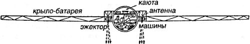
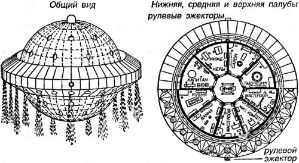
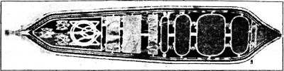

Электронные межпланетные корабли
В самом начале «космического» века было сделано несколько принципиально важных открытий в области строения атома Вспомним хотя бы, что именно тогда была открыта радиоактивность, выделены новые элементы — полоний и радий — и сформулированы положения квантовой теории.
Разумеется, все эти открытия широко популяризировались и стали предметом обсуждения не только ученых, но и мечтателей. Очень скоро появились и романы, в которых две идеи — управление энергией атома и космические перелеты — совмещались в одну. В виртуальный космос литераторов прорвались межпланетные корабли с атомными двигателями, но, как мы впоследствии увидим, они лишь ненамного опередили вполне реальные модели и прототипы. Наверное, еще и потому, что в этот раз профессиональные изобретатели не захотели отдать красивую и перспективную идею на «растерзание» литераторам, а занялись перебором вариантов самостоятельно. Среди этих изобретателей был и австриец Франц Улинский.
Франц Улинский родился в 1890 году и принадлежал к старинному польскому роду. Во время Первой мировой войны Улинского благодаря его работам по конструированию газовых турбин перевели в австро-венгерский авиаотряд и командировали в Высшую техническую школу в Вене. Далее он в качестве технического офицера был назначен руководителем работ моторного авиазавода. Именно в это время Улинский, помимо исполнения своих служебных обязанностей, занялся теорией межпланетных сообщений и изобрел дифференциальный парашют большой грузоподъемности. (По утверждению самого Улинского, свою первую модель межпланетного корабля на основе порохового ракетного двигателя он построил еще в 1901 году, что, конечно же, вызывает сомнения у скептически настроенного исследователя.)
В 1920 году Франц Улинский опубликовал серию статей, в которых изложил подробности двух проектов космических кораблей, названных им «электронными». Первый корабль предназначался для перелетов внутри Солнечной системы и приводился в движение энергией нашего светила. На этом корабле Улинский предлагал установить огромный диск из термоэлементов, представляющих собой наборы металлических пластин, образующих термопары. Получаемая энергия направлялась в «электро-эжекторы», установленные на внешней подвеске и создающие поток электронов, который толкал корабль подобно струе газов из реактивного двигателя.
Корабль второго типа, предложенный сметливым австрийцем, внешне был похож на первый, но использовал внутриатомную энергию вещества, а потому не нуждается в огромном диске из термоэлементов. Соответственно, и границ для перемещений такого корабля практически не существует, и Улинский называл его «мировым» (в значении «всемирный»).
Согласно проекту, «мировой» корабль должен иметь шарообразную форму, так как эта форма оптимальна для устройства карданной подвески с электро-эжекторами, а кроме того оказывает наибольшее сопротивление разрыву оболочки при внешних и внутренних нагрузках. Оболочка корабля должна состоять из следующих частей. Внешняя — стальная, изнутри усиленная распорками; распорки обложены асбестовыми листами. С внутренней стороны оболочка прикрыта фанерными щитами с прокладкой из прорезиненной ткани.
Внутри помещение корабля разбито на шесть этажей, которые соединены друг с другом при помощи лестницы. Нижний этаж занят под машинный зал. На втором этаже — трюм для груза. На третьем располагаются кухня, уборные, ванны. На четвертом — пассажирские каюты. На пятом — служебные помещения и прогулочная палуба. На шестом — верхний салон.
Кабина пилота находится на самом верху шарообразного корабля, у его полюса. Рубка снабжена всеми необходимыми инструментами: указателем скорости (эфиро-тахометром), указателем масс, станцией радио-телеграфа, подробной картой звездного неба.
Старт и посадка осуществляются на водной поверхности. По расчетам Улинского, при весе в 200 тонн и диаметре в 20 метров «мировой» корабль погружается в воду не более чем на 2,5 метра.
В том же 1920 году Франц Улинский взял патент на устройство еще одного межпланетного «электронно-ракетного» корабля. Этот корабль также окружал диск из термоэлементов, преобразующих солнечную энергию в электрический ток. Особенностью третьего корабля Улинского является наличие турбокомпрессора, работающего на реактивную установку с дюзой и обеспечивающего скоростной полет в атмосфере. Реактивная установка состоит из котла, к которому подведены две трубы: сверху — высокого давления, снизу — низкого давления. Турбокомпрессор поддерживает циркуляцию в этом контуре, восстанавливая давление по мере необходимости. В котле же происходит реакция, являющаяся движущей силой корабля, как и в случае с ракетами, с той лишь разницей, что благодаря замкнутости процесса не происходит потерь рабочего вещества — правильность этой идеи, как вы понимаете, целиком остается на совести автора.


Особый интерес представляет устройство «электро-эжекторов», которые Улинский планировал разместить на всех трех кораблях. Принцип действия этих аппаратов изобретатель описывает следующим образом.
Для приведения эжекторов в рабочее состояние необходимо напряжение в 250 000 вольт. Создаваемый термопарами постоянный ток преобразуется в переменный ток высокого напряжения при помощи газового центробежного прерывателя. Каждый из эжекторов состоит из трех частей. Катод вставлен в соленоид и сильно нагрет. Соленоид создает мощное электромагнитное поле. Когда между катодом и соленоидом возникает ток требуемого напряжения, то из раскаленного катода вылетают электроны, которые, двигаясь по силовым линиям анодного соленоида, достигают «главного» катода. Между этим последним и анодом проходит электроток, который гонит электроны из вольфрамовой спирали, наполненной амальгамой бария. Эти-то электроны и вылетают из эжектора, создавая тягу.
Улинский полагал, что для отрыва от Земли и подъема корабля третьего типа (его общий вес изобретатель оценил в 3 тонны) достаточно расхода 5 грамм вещества в секунду (в данном случае — ртутного препарата). Этот расход уменьшается по мере удаления от Земли.
Работы австрийца не остались без внимания. В 1926 году немецкий изобретатель Рокенфеллер опубликовал проект шарообразного ракетного корабля, по форме и устройству похожий на «мировой» корабль Улинского.
А еще через год в России вышел научно-фантастический роман «Через тысячу лет», в котором инженер В. Д. Никольский изложил ряд интересных предположений о перспективах научно-технического развития. В частности, Никольский описал, как в 3000 году земляне построили корабль, который перемещался в пространстве силой реакции извергающихся из него «продуктов распада атомов». Корабль был длиной около 30 метров, а формой напоминал рыбу с двумя толстыми и короткими крыльями по бокам. Кроме того, вдоль корпуса располагались овальные отверстия газовых эжекторов электронно-реактивного двигателя.
Переднюю часть корабля Никольского занимала кабина пилота с многочисленными автоматическими приборами: указателем скорости, наклона, направления и т. п. Далее шли четыре пассажирские каюты, уборная, ванна и помещение для багажа. Корабль мог развивать скорость до 10 км/с и выходить на орбиту Земли.
Другой вариант использования внутриатомной энергии предложил французский инженер Робер Эсно-Пельтри, опубликовавший в 1913 году статью о возможности полета на Луну. В качестве взрывчатого вещества, обеспечивающего движение кораблей в космическом пространстве, Эсно-Пельтри намечает радий.
Выкладки инженера были положены в основу романа французского фантаста Мираля-Виже «Огненное кольцо», в котором описывается экспедиция четырех ученых на Марс и Сатурн.
Автор романа сообщает читателям, что «1 грамм радия в течении часа развивает количество энергии, способное поднять этот вес на высоту 34 километров. Эта энергия — в несколько миллиардов лошадиных сил. 1 килограмм его содержит энергии в 5670 раз больше того, которое необходимо для полета на Луну. При полете ускорение движения предполагается равным 1,1 земного. Поэтому увеличение веса пассажиров будет незначительным».
Герои романа, инженеры Эсперэ и Генри Валсор, открывают способ получить из радиевых солей вещество в 60000 раз более активное, чем радий, названное ими «вириумом». Трех килограммов этого вещества достаточно, чтобы долететь с Земли до Сатурна и вернуться обратно. Так как распад вириума происходит медленно, то для ускорения процесса был изобретен способ «физической катализации»: пучок катодных лучей направлялся на вириум, и под их воздействием происходило бурное «разложение» последнего с выделением требуемой энергии.
Сама ракета Мираля-Виже имела овальную форму и была построена из никелевой стали. Общая высота ракеты — 14 метров, наибольший диаметр — 4 метра. Одна половина ее вдоль корпуса была зачернена, другая — отполирована до зеркального блеска. Подобная «раскраска», по мнению автора, необходима для того, чтобы регулировать температуру корпуса при полете в межпланетном пространстве, поворачивая ракету к Солнцу то черной стороной, то отполированной. Стенки ракеты состоят из четырех слоев, между ними — разреженный воздух, служащий теплоизолятором. Внизу корпуса закреплены четыре «ноги-буфера», смягчающие удар при посадке. Вход расположен между «ног» — там имеется круглый остекленный люк.
Внутри ракеты проходит вертикальная шахта диаметром 1 метр с лестницей; вокруг шахты располагаются помещения на 4 этажах. Первый (нижний) этаж занимает «камера сгорания», из которой по трем стальным трубам вырываются продукты разложения вириума. Над камерой закреплен свинцовый ящик с запасами этого фантастического вещества. Второй этаж отведен под пассажирскую каюту высотой в 4,5 метра и с четырьмя окнами. На третьем и четвертом этажах находится склад.
Для поворота ракеты вокруг ее продольной оси предусмотрены еще три выхлопные трубы, установленные под углом в 120° друг к другу.
Ракета стартует в вертикальном положении, разгоняясь с набором высоты. Полет до Луны проходил на скорости 60 км/с, до Марса — 800 км/с, до Сатурна — 1200 км/с.
Еще один проект космической ракеты на «атомной» тяге был предложен инженером Александром Федоровым, представившим модель и описание своего корабля на Выставке межпланетных аппаратов, проходившей в Москве в 1927 году.
Корабль Федорова должен был приводиться в движение электрохимической энергией, являвшейся результатом использования «внутриатомной энергии». Согласно сохранившимся чертежам, он имел обтекаемую форму с тремя пропеллерами, боковыми крыльями, главной и вспомогательными дюзами. При выходе за пределы земной атмосферы пропеллеры и крылья убирались. Общая длина ракеты — 60 метров, диаметр — 8 метров, вес с горючим — 80 тонн, максимальная развиваемая скорость — 25 км/с. Жилые помещения спроектированы в расчете на экипаж из шестерых человек.

К сожалению, других подробностей о ракете Александра Федорова и о конструкции ее двигателей на выставке не сообщалось.